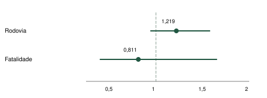
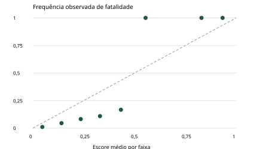

ANÁLISE INTEGRADA DE SINISTROS DE TRÂNSITO E VARIÁVEIS CLIMÁTICAS NA BAIXADA SANTISTA
Um pipeline de ETL e modelagem preditiva para apoio à gestão viária
Projeto Integrador · Ciência de Dados · Estudo retrospectivo com edição local dos dados.
RESUMO
Este estudo desenvolve um pipeline de Engenharia de Dados para integrar sinistros de trânsito e observações meteorológicas na Região Metropolitana da Baixada Santista. A base regional efetivamente recebida contém 31.493 sinistros, 911 eventos fatais e 961 óbitos entre janeiro de 2022 e agosto de 2025. A integração meteorológica limita-se a 2023, com seleção da estação fornecida mais próxima pela fórmula de Haversine e soma das três horas estritamente anteriores. A hipótese central, precipitação anterior superior a 5 mm associada a maior proporção rodoviária e maior fatalidade, não foi sustentada: OR rodoviário 1,219, IC95% 0,939 a 1,581, p = 0,1361; OR de fatalidade 0,811, IC95% 0,397 a 1,655, p = 0,5645. Regressão logística e Random Forest foram comparadas a uma previsão constante, com treino, validação e teste cronológicos. A logística selecionada atingiu AUC 0,765 em 2025, acompanhada de pior Brier que o comparador constante. Uma ablação em 2023 não mostrou ganho pontual com as variáveis meteorológicas adicionais. A contribuição principal é a rastreabilidade entre origem, transformação, hipótese, cálculo e conclusão, com exposição explícita das limitações de cobertura, preenchimento e generalização.
Palavras-chave: sinistros de trânsito; Engenharia de Dados; Haversine; precipitação; validação temporal; Baixada Santista.
1 INTRODUÇÃO
Os sinistros de trânsito impõem perdas humanas e custos sociais que justificam investigação sistemática. A Organização Mundial da Saúde descreve uma carga global superior a um milhão de mortes anuais e dezenas de milhões de lesões não fatais; a gravidade do problema exige combinar prevenção, infraestrutura e qualidade da informação (OMS, 2026). No Brasil, Aquino et al. (2020) documentam diferenças territoriais na evolução da mortalidade. Esses resultados motivam investigações regionais, mas não podem ser transportados como estimativas específicas da Baixada Santista.
A região reúne Santos, São Vicente, Praia Grande, Guarujá, Cubatão, Bertioga, Itanhaém, Mongaguá e Peruíbe. O recorte administrativo deve acompanhar os nove códigos municipais, em vez de uma seleção de sete cidades. A interface entre vias urbanas, acessos rodoviários e condições meteorológicas oferece uma questão aplicada: entre os sinistros registrados, a chuva anterior se associa à distribuição por tipo de via e à presença de fatalidade?
O objetivo é construir e documentar um ETL auditável, integrar observações espaciais e temporais, testar componentes mensuráveis dessa hipótese e avaliar modelos de fatalidade condicionada a um sinistro. O desenho é observacional e retrospectivo. A base não contém medidas suficientes de fluxo, velocidade, exposição por viagem ou fatores comportamentais para identificar uma relação causal da chuva. Também não permite tratar uma mudança na proporção rodoviária como prova de migração de hotspots.
A hipótese composta é decomposta em H-R: chuva anterior superior a 5 mm está associada a maior chance de o registro ocorrer em rodovia; e H-F: essa exposição está associada a maior chance de o registro ser fatal. A precipitação é acumulada em três horas anteriores completas. As respectivas hipóteses nulas estabelecem OR = 1. Para sustentar a direção proposta, cada componente requer OR > 1, intervalo compatível com essa direção e evidência estatística, sem transformar o critério em demonstração causal.
2 FUNDAMENTAÇÃO TEÓRICA
2.1 Clima, frequência e gravidade
Theofilatos e Yannis (2014) distinguem frequência, taxas por exposição e severidade. Sua revisão indica que a associação de precipitação com frequência não implica uma resposta uniforme da gravidade. Essa distinção fundamenta a separação dos desfechos no presente estudo: contar acidentes, estimar fatalidade entre acidentes e estimar risco por viagem são tarefas com denominadores diferentes. A literatura oferece plausibilidade e perguntas, não antecipa a confirmação local.
2.2 Engenharia de Dados e integração
Kimball e Caserta (2004) estruturam o ETL como extração, limpeza, conformação e entrega. Aqui, a conformação envolve chaves municipais, identificadores de eventos, unidades meteorológicas e horários. Preservar edições e registrar transformações é necessário porque uma junção incorreta pode multiplicar eventos ou converter ausência em aparente falta de chuva. O modelo analítico deve preservar a unidade de observação antes de qualquer teste.
2.3 Distância de Haversine
Para coordenadas em graus decimais, calculam-se φ = latitude × π/180 e λ = longitude × π/180. A distância de arco em uma esfera de raio R = 6.371 km é:
a = sin²((φ₂ − φ₁)/2) + cos(φ₁) cos(φ₂) sin²((λ₂ − λ₁)/2)
d = 2R asin(√a)
A raiz quadrada abrange toda a soma a. A implementação limita numericamente a ao intervalo [0, 1] antes da raiz, evitando erros de arredondamento próximos aos extremos. A documentação de Haversine do scikit-learn explicita a ordem latitude/longitude e o uso de radianos. A fórmula calcula distância sobre uma aproximação esférica; não calcula rota na malha viária e não certifica pertencimento a um município. No ETL, ela seleciona a estação mais próxima entre as duas fornecidas, sujeita ao limite de 100 km. No painel, aplica um filtro por raio sobre coordenadas públicas arredondadas.
2.4 Inferência e predição
Na tabela 2×2, as linhas são chuva > 5 mm e chuva ≤ 5 mm; as colunas indicam presença e ausência do desfecho. As células são a, b, c e d. Calculam-se OR = ad/(bc), erro-padrão de log(OR) = √(1/a + 1/b + 1/c + 1/d) e IC95% = exp[log(OR) ± 1,96 × erro-padrão], quando todas as células são positivas. A incerteza deve acompanhar a estimativa pontual; uma razão de chances não é uma razão de probabilidades.
O qui-quadrado de Pearson usa frequências esperadas Eᵢⱼ = total da linha i × total da coluna j / N e χ² = Σ[(Oᵢⱼ − Eᵢⱼ)²/Eᵢⱼ], com um grau de liberdade na tabela 2×2. Trata-se de uma soma de diferenças quadráticas divididas pelas frequências esperadas. Não é um teste de causalidade nem uma validação geométrica de hotspots. Usa-se Fisher bilateral quando alguma frequência esperada é inferior a cinco ou existe célula zero. Na ausência de margens positivas, não há comparação identificável. O p-valor não mede a probabilidade de a hipótese ser verdadeira; a recomendação da ASA impede equiparar falta de significância a prova de ausência de efeito (WASSERSTEIN; LAZAR, 2016).
A regressão logística representa P(Y=1|X) por uma função sigmoide de uma combinação dos atributos. A regularização L2 reduz coeficientes extremos. Random Forest combina árvores treinadas com aleatoriedade controlada, permitindo relações não lineares (BREIMAN, 2001). A avaliação usa discriminação, identificação da classe rara e erro probabilístico. Saito e Rehmsmeier (2015) justificam atenção à precisão e revocação em classes desbalanceadas; neste estudo usa-se Average Precision (AP), que não é denominada área trapezoidal PR-AUC. O Brier mede o erro quadrático das previsões e não constitui, isoladamente, uma medida pura de calibração.
3 PROCEDIMENTOS METODOLÓGICOS
3.1 Desenho, população e cobertura
A unidade principal é o sinistro registrado. Somam-se as quantidades da origem, sem confundir óbitos com eventos fatais. O acervo nacional auditado contém 8.106.410 linhas de acidentes; esse universo não representa a população regional. A extração regional seleciona UF SP e os códigos 3548500, 3551009, 3541000, 3518701, 3513504, 3506359, 3522109, 3537602 e 3531100. O último é Mongaguá; Peruíbe utiliza 3537602.
O período disponível é 01/01/2022 a 31/08/2025. O texto inicial informava encerramento em dezembro de 2025; o painel anterior solicitava outubro. Nenhum dos dois limites autoriza preencher os meses não recebidos com zero. A integração INMET cobre apenas 2023. As inferências baseadas em precipitação medida restringem-se, portanto, ao subconjunto desse ano. O arquivo local contém seis ZIPs de edições viárias e um ZIP meteorológico; a afirmação de 46 ZIPs do texto inicial não descreve os arquivos usados nesta reprodução.
3.2 Etapa 1: preservar e inventariar a origem
Os ZIPs recebidos permanecem em raw/, sem alteração dos bytes originais. O manifesto registra caminho relativo, tamanho e SHA-256 de cada arquivo, dos insumos tratados, dos scripts e dos resultados públicos. O inventário nacional identifica a edição interna e cópias idênticas. Uma reprodução deve obter os mesmos insumos ou declarar formalmente uma nova edição do estudo. O portal público pode fornecer versões posteriores; sua existência não torna reproduzíveis números de uma edição diferente.
3.3 Etapa 2: extrair, normalizar e reconciliar
O processamento lê os CSVs internos em fluxo com codificação CP1252 e delimitador ponto e vírgula, normaliza textos para UTF-8, padroniza espaços e usa chaves explícitas. A escrita no armazenamento intermediário ocorre em lotes. As edições mais recentes prevalecem por identificador; edições anteriores recuperam somente chaves ausentes. Nas tabelas de detalhes, categorias antigas de um evento substituído não reaparecem como registros atuais. Contagens de entrada, retenção, duplicação e linhas malformadas são registradas na auditoria.
Valores ausentes permanecem marcadores de ausência nas tabelas textuais e null nas variáveis analíticas apropriadas. Sentinelas meteorológicas como −9999 não viram medidas. O modelo nacional é convertido para Parquet com compressão Zstandard. Horários inválidos são marcados como desconhecidos. Vínculos sem correspondência são identificados e preservados em quarentena quando necessário. O catálogo de estações pode ser regenerado sem depender do dashboard histórico de Rondônia.
3.4 Etapa 3: construir o recorte e os desfechos
A seleção municipal opera sobre os Parquets auditados. Pessoas e localidades são extraídas por semijunção, mantendo somente as chaves regionais, sem multiplicar a tabela de acidentes. A existência de vítima é estabelecida por lesão LEVE, GRAVE ou OBITO, ou pela contagem de eventos fatais. Um evento só é classificado sem vítimas quando todos os envolvidos reconciliam como SEM FERIMENTO e não há gravidade desconhecida. O agregado “feridos/ilesos” não distingue essas duas situações.
O indicador de fatalidade usa qtde_acid_com_obitos; o indicador de óbitos usa qtde_obitos. Para a predição binária, uma célula agregada com n eventos e f eventos fatais produz f exemplos positivos e n−f negativos com os mesmos atributos e data. Essas cópias nunca atravessam as divisões temporais. Identificadores e números de endereço não são publicados. Coordenadas ausentes, zero ou fora do envelope regional são excluídas das operações espaciais e mantidas nos totais não espaciais; o envelope é uma checagem aproximada, não um polígono administrativo.
3.5 Etapa 4: integrar espaço e tempo
Para sinistros de 2023 com coordenadas válidas, calcula-se a distância às estações A765 (Bertioga) e A712 (Iguape). A estação de menor distância é selecionada se estiver a até 100 km. O conjunto candidato tem duas estações; não se afirma que sejam as mais próximas em toda a rede INMET. A distância de vinculação é calculada com coordenadas originais e preservada no cubo em quilômetros.
As observações UTC são convertidas para BRT por subtração de três horas. Quando o horário HHMMSS é válido, utiliza-se sua hora inteira. Sem hora válida, a fase do dia recebe uma aproximação determinística: madrugada 03h, manhã 09h, tarde 15h e noite 21h; sem fase válida, 12h. Essa regra não é probabilística e pode introduzir erro de vinculação. O instante t representa a hora de referência, truncada quando há minutos registrados.
R₃h(t) = P(t−1h) + P(t−2h) + P(t−3h)
Exigem-se três medidas válidas e estritamente anteriores à hora de referência. Não se soma a precipitação da hora corrente, não se usa medida futura e não se substitui janela incompleta por zero. Trata-se de três observações horárias anteriores, não de uma integração com resolução de minutos. O desfecho primário compara R₃h > 5 mm com R₃h ≤ 5 mm. A condição “pista molhada/indício de chuva” já existente no painel permanece análise complementar: pista MOLHADA, chuva horária > 0,2 mm ou chuva anterior > 0,5 mm. Os dois conceitos não são intercambiáveis.
3.6 Etapa 5: executar os testes
As comparações H-R e H-F usam somente eventos com janela de chuva completa; H-R também requer via classificável. Uma rodovia é identificada pelo tipo ESTADUAL/FEDERAL, código SP/BR ou nome inequívoco do eixo; a regra evita confundir Avenida Padre Anchieta com Rodovia Anchieta. Ausência de identificação não é automaticamente via urbana. Os testes são bilaterais, com α = 0,05, apresentação das contagens, OR e IC95%. Reporta-se também ajuste de Holm para os dois componentes centrais. Comparações municipais e filtros adicionais são exploratórios. Sua significância isolada não equivale a confirmação regional.
Como análise complementar, ajusta-se Poisson para contagens município-dia em 2023. O calendário inicial tem 365 × 9 = 3.285 células, incluindo dias sem sinistro registrado. Cada município recebe a estação mais próxima de um ponto de referência ponderado pelas ocorrências geocodificadas, fixo entre dias. Uma soma diária exige 24 observações válidas. Excluem-se células com chuva incompleta, sem usar precipitação média condicionada à ocorrência de acidente.
O preditor inclui efeitos de município, mês e dia da semana, tendência linear, log(1 + chuva diária), indicador de verão turístico e sua interação com chuva. O indicador turístico corresponde a sextas, sábados e domingos de dezembro, janeiro e fevereiro; não mede número de visitantes. Erros-padrão são calculados por matriz sanduíche agrupada em semanas, reunindo municípios para acomodar dependência compartilhada. Reportam-se razão de contagens IRR, intervalo e dispersão de Pearson. Sem fluxo de tráfego como offset, os resultados se referem a contagens por dia e não a risco por deslocamento (CAMERON; TRIVEDI, 2013).
3.7 Etapa 6: treinar e avaliar modelos
No experimento de contexto, o treino cobre 2022–2023 (17.210 eventos; 481 fatais), a validação 2024 (8.607; 275) e o teste janeiro–agosto de 2025 (5.676; 155). Usam-se município, fase do dia, dia da semana, categoria de via, condição combinada de pista/chuva, seno e cosseno do mês e coordenadas públicas. Não entram vítimas, quantidade de óbitos, quantidade de eventos fatais ou identificadores como atributos. Os escores são condicionados à ocorrência já registrada, sem horizonte de previsão de incidência.
O experimento meteorológico usa apenas eventos de 2023 com chuva horária conhecida: treino janeiro–junho (4.355; 107 fatais), validação julho–setembro (2.178; 64) e teste outubro–dezembro (2.168; 51). Acrescenta chuva horária, chuva anterior, temperatura, estação, distância e indicação de hora aproximada. Na ablação, mantém-se exatamente a mesma população e os mesmos períodos, retirando apenas esses atributos meteorológicos adicionais. A condição combinada de pista/chuva continua no controle; logo, essa ablação não representa ausência absoluta de informação meteorológica.
As categorias usam codificação one-hot, ignorando categorias não vistas no treino. Variáveis numéricas usam mediana e indicadores de ausência calculados no treino, seguidos de padronização. São comparados previsão constante da prevalência de treino, regressão logística L2 com C = 1 e até 2.000 iterações, e Random Forest com 250 árvores, profundidade máxima 8 e mínimo de 30 exemplos por folha. A semente é 42. Não foi usado class_weight: o desbalanceamento é examinado por AP, precisão, sensibilidade e ajuste de limiar. A penalização L2 não é balanceamento de classes.
Seleciona-se o modelo pela maior AP na validação, incluindo o comparador constante; o desempate considera menor Brier. O limiar dos classificadores maximiza F1 na validação; o comparador usa 0,5. Depois, os parâmetros e o limiar ficam congelados para o teste. As tabelas mostram todos os candidatos, sem trocar o selecionado em função do teste. Essa separação reduz vazamento temporal; não valida transferência para outro município ou mudança de processo de notificação (ROBERTS et al., 2017).
Reportam-se ROC-AUC, AP, Brier, matriz de confusão e confiabilidade em faixas de largura 0,1. IC95% percentis usam 200 reamostragens de dias do teste e semente 42. Esses intervalos não incorporam a incerteza de treinamento nem dependência entre dias. O painel filtra previsões de teste já calculadas, sem treinar novamente e sem exibir escores de treino como desempenho independente.
4 RESULTADOS
4.1 Cobertura e denominadores
| Indicador | Quantidade ou definição |
|---|---|
| Sinistros regionais | 31.493 |
| Eventos fatais | 911 |
| Óbitos em pessoas | 961 |
| Eventos fatais / sinistros | 2,893% |
| Óbitos / 100 sinistros | 3,051; não é proporção de eventos fatais |
| Sinistros com vítimas classificáveis | 5.530 (17,56%) |
| Condição combinada de pista/chuva conhecida | 23.786 |
| Sem coordenadas válidas | 5.877 |
| Com chuva horária vinculada | 8.701 |
| Com chuva anterior de três horas completa | 8.688 |
| Com chuva anterior > 5 mm | 381 |
Os 31.493 sinistros estão representados em 30.867 grupos públicos. O número de grupos não é o denominador dos indicadores. A proporção de fatalidade utiliza eventos fatais; a soma de óbitos pode exceder os eventos fatais porque um evento pode produzir mais de uma morte. A contagem de 1.692.810 registros do texto inicial não foi obtida para esta seleção regional.
4.2 Hipótese central: tipo de via
| Rodovia | Sim | Não | Total |
|---|---|---|---|
| Chuva anterior > 5 mm | 78 | 248 | 326 |
| Chuva anterior ≤ 5 mm | 1.579 | 6.118 | 7.697 |
Na amostra de 8.023 eventos com via e chuva classificáveis, a proporção rodoviária é 23,93% após > 5 mm e 20,51% após ≤ 5 mm. Obtêm-se OR 1,219, IC95% 0,939 a 1,581, χ² = 2,2217 e p = 0,1361. O intervalo inclui 1 e não sustenta aumento no nível adotado. O p ajustado por Holm para os dois componentes centrais é 0,2722. Não se pode concluir deslocamento dos hotspots para rodovias.
4.3 Hipótese central: fatalidade
| Evento fatal | Sim | Não | Total |
|---|---|---|---|
| Chuva anterior > 5 mm | 8 | 373 | 381 |
| Chuva anterior ≤ 5 mm | 214 | 8.093 | 8.307 |
Entre 8.688 eventos com janela completa, a proporção fatal é 2,100% após > 5 mm e 2,576% no grupo de comparação. OR 0,811, IC95% 0,397 a 1,655, χ² = 0,3321 e p = 0,5645. São apenas oito eventos fatais na exposição mais alta, condição que amplia a incerteza. O intervalo não permite afirmar aumento nem proteção. O p ajustado é 0,5645. A hipótese composta não é sustentada, pois não se demonstrou a direção positiva exigida em seus dois componentes.

4.4 Heterogeneidade municipal e análise complementar
| Município | N climático | N > 5 mm | OR rodovia | p rodovia | OR fatalidade | p fatalidade |
|---|---|---|---|---|---|---|
| Bertioga | 447 | 20 | 2,697 | 0,0376 | 0,969 | 1,0000 |
| Cubatão | 659 | 29 | 3,121 | 0,0287 | 0,768 | 1,0000 |
| Guarujá | 1.392 | 73 | 1,317 | 0,5490 | 0,902 | 1,0000 |
| Itanhaém | 447 | 18 | 1,145 | 0,7915 | 1,088 | 1,0000 |
| Mongaguá | 231 | 10 | 3,385 | 0,0893 | indisponível | 1,0000 |
| Peruíbe | 287 | 12 | 0,486 | 0,6970 | indisponível | 1,0000 |
| Praia Grande | 1.517 | 56 | 0,772 | 0,4725 | 0,741 | 1,0000 |
| Santos | 2.087 | 84 | 0,411 | 0,3192 | 0,698 | 1,0000 |
| São Vicente | 1.621 | 79 | 1,342 | 0,3523 | 1,226 | 0,6802 |
Os p-valores municipais da tabela são nominais. Bertioga e Cubatão apresentam associação rodoviária nominalmente positiva, com p = 0,0376 e 0,0287; ao ajustar os dois componentes de cada município por Holm, os valores passam a 0,0752 e 0,0574, respectivamente. Também há múltiplas comparações entre nove municípios, que exigiriam controle adicional para alegações confirmatórias. Nenhum município apresenta evidência de aumento da fatalidade pela exposição central. Células nulas de Mongaguá e Peruíbe impedem IC logarítmico, embora Fisher permita o teste. O resultado regional não deve ser substituído pelo município com menor p.
A exposição combinada do painel anterior produz outro resultado: OR de rodovia 1,270, IC95% 1,166 a 1,382, p = 3,336e-08. Sua significância não confirma H-R, pois combina pista registrada e limites de 0,2/0,5 mm em uma cobertura temporal diferente. Para vítimas, essa exposição combinada produz OR 0,982, p = 0,8960, com somente 4.857 eventos elegíveis. Trocar o indicador ou o denominador após observar resultados mudaria a pergunta do estudo.
4.5 Contagens diárias e sazonalidade
O modelo diário retém 3.227 município-dias e 8.754 sinistros, incluindo 745 células sem evento registrado; 58 células foram excluídas por chuva incompleta. O ajuste convergiu, com 30 parâmetros independentes e 53 agrupamentos semanais. A dispersão de Pearson é 1,329, indicando variação superior à hipótese Poisson estrita e motivando a inferência robusta.
O indicador de verão turístico em dia sem chuva apresenta IRR 1,122, IC95% 0,942 a 1,336, p = 0,1976. A interação com log(1 + chuva diária) tem multiplicador 0,987, IC95% 0,924 a 1,054, p = 0,6918. Não se encontrou evidência suficiente de amplificação sazonal pela precipitação. O efeito turístico principal é condicional à chuva zero por haver interação; não é uma média marginal sobre todos os dias. O modelo usa 2023 e uma aproximação meteorológica municipal, sem exposição ao tráfego e sem classificação de feriados.
4.6 Predição em 2025
| Modelo | AP validação | AUC teste | AP teste | Brier teste |
|---|---|---|---|---|
| Prevalência constante | 0,032 | 0,500 | 0,027 | 0,02656 |
| Regressão logística | 0,338 | 0,765 | 0,131 | 0,03119 |
| Random Forest | 0,258 | 0,603 | 0,096 | 0,02862 |
A regressão logística foi selecionada na validação. No teste de 5.676 eventos e 155 fatais, sua AUC é 0,765, IC95% 0,729 a 0,807; AP 0,131, contra prevalência 0,027. Isso indica alguma capacidade de ordenação da classe rara. Entretanto, o Brier 0,03119 é pior que o da previsão constante, 0,02656. A AUC caiu de 0,949 na validação para 0,765 no teste.
No limiar congelado 0,1175, há 99 verdadeiros positivos, 1.469 falsos positivos, 56 falsos negativos e 4.052 verdadeiros negativos. A precisão é 6,31% e a sensibilidade 63,87%. Essa combinação impõe alto custo de falsos alertas. A acurácia isolada favoreceria classificadores que quase sempre preveem ausência de fatalidade. Os escores são experimentais e não justificam alocação operacional automatizada.

4.7 Predição meteorológica de 2023 e ablação
| Modelo | AP validação | AUC teste | AP teste | Brier teste |
|---|---|---|---|---|
| Prevalência constante | 0,029 | 0,500 | 0,024 | 0,02297 |
| Regressão logística | 0,505 | 0,961 | 0,370 | 0,01901 |
| Random Forest | 0,476 | 0,938 | 0,248 | 0,02070 |
A logística meteorológica foi selecionada por AP de validação. No teste de 2.168 eventos e 51 fatais, AUC 0,961 e AP 0,370 não equivalem a alta utilidade de classificação: no limiar definido na validação, apenas quatro dos 51 eventos fatais são detectados, sensibilidade 7,84%. A seleção por AP avalia o ranking; o desempenho de um limiar deve ser avaliado separadamente.
No controle com os mesmos eventos e períodos, retirando os atributos meteorológicos adicionais, a logística apresenta AUC 0,966, AP 0,466 e Brier 0,01813, contra 0,961, 0,370 e 0,01901 com os atributos. Não houve ganho pontual pelas métricas reportadas. Não se executou teste pareado da diferença de desempenho; portanto, não se afirma superioridade estatística do controle. O resultado impede atribuir a AUC elevada à chuva ou manter a alegação de que a Random Forest foi superior com AUC 0,8790 nesta reprodução.
5 DISCUSSÃO E LIMITAÇÕES
A conferência evidencia que consistência algébrica é necessária, mas não suficiente. Haversine e Pearson podem estar corretamente implementados e ainda responder à pergunta errada se a exposição, o desfecho ou a unidade de contagem forem trocados. A diferença entre o limite original de 5 mm e o indicador combinado de pista é um exemplo concreto. A associação significativa da segunda definição não deve ser usada para validar a primeira.
Há forte incompletude e mudança do processo de registro. Em 2024, a condição combinada de pista/chuva está ausente em 100% dos eventos fatais e em aproximadamente 30,7% dos não fatais. Em 2025, a categoria de via está ausente em aproximadamente 88,5% dos não fatais e 61,9% dos fatais. Preditores e indicadores de ausência podem aprender padrões administrativos associados ao desfecho. Isso constitui risco de atalho informacional e reduz a interpretação física de AUCs elevadas. A separação temporal não elimina esse problema; a queda no teste e a ablação devem ser lidas nesse contexto.
A classificação de vítimas apresenta cobertura de apenas 17,56% do total. Em 2024–2025, a regra conservadora deixa todos os eventos não fatais sem classificação suficiente de vítimas na base disponível. O OR complementar de vítimas usa uma amostra selecionada e não deve ser generalizado ao conjunto. A hipótese de fatalidade central usa um desfecho distinto e deve ser avaliada em sua própria tabela.
A disponibilidade de apenas duas estações limita a resolução espacial. A estação mais próxima pode ficar a dezenas de quilômetros e enfrentar um regime de chuva diferente do local do sinistro. O limite de 100 km é uma decisão operacional que necessita análise de sensibilidade em novos estudos. As análises de hora registrada e exposição meteorológica isolada estão disponibilizadas no relatório de resultados, sem resolver toda a incerteza de vinculação.
Os pontos públicos são arredondados a 0,01°. Isso protege a localização individual e permite filtros aproximados, mas altera a seleção próxima às bordas de um raio. O mapa mostra concentração de registros, sem estimar risco ajustado por fluxo nem testar migração de hotspots. Para essa alegação, seriam necessários desenho espacial específico, medidas de exposição, tratamento da dependência espacial e comparações temporais compatíveis.
Os testes 2×2 não ajustam os confundidores e pressupõem independência entre unidades para sua aproximação. Eventos próximos podem compartilhar condições, de forma que seus intervalos e p-valores exigem prudência. O modelo diário usa inferência agrupada por semana, mas permanece observacional. O calendário sem eventos representa ausência de notificação naquele acervo, não garantia de ausência real de sinistros. Não há avaliação prospectiva, validação geográfica externa ou comprovação de resposta em tempo real.
6 CONCLUSÃO PARA A BAIXADA SANTISTA
O projeto implementou um caminho verificável entre arquivos viários e meteorológicos, ETL, associação por Haversine, engenharia de atributos, testes e modelos. A cobertura regional observada contém 31.493 sinistros e termina em agosto de 2025; a chuva vinculada permite investigar a hipótese original somente em 2023.
A precipitação superior a 5 mm nas três horas anteriores não apresentou evidência suficiente de aumento da proporção de sinistros rodoviários ou fatais. Assim, a hipótese composta de deslocamento para rodovias acompanhado de maior fatalidade não foi sustentada pelos dados disponíveis. Esse resultado não demonstra equivalência, ausência definitiva de efeito ou proteção causada pela chuva. A interpretação depende dos intervalos, da pequena quantidade de fatalidades sob maior precipitação e das limitações de registro e vinculação.
A modelagem preditiva contribuiu como avaliação crítica de viabilidade. A logística superou a Random Forest na seleção por AP, mas perdeu desempenho temporal e não superou o comparador constante em Brier no teste de 2025. A inclusão de atributos meteorológicos não produziu ganho pontual na ablação de 2023. Esses resultados não autorizam probabilidades operacionais nem comprovam um mecanismo causal. O dashboard funciona como instrumento de consulta, fiscalização da qualidade dos dados e formulação de novas investigações.
O prosseguimento tecnicamente justificado consiste em ampliar cobertura meteorológica e qualidade dos registros, incorporar exposição ao tráfego, verificar a estabilidade dos campos administrativos, conduzir validação temporal e geográfica externa e definir custos de erros antes de qualquer uso decisório. A reprodutibilidade e a apresentação de resultados negativos são contribuições concretas deste estudo.
7 REPRODUTIBILIDADE
O procedimento segue a orientação de separar dados, métodos e resultados e registrar dependências computacionais (WILSON et al., 2017). O ambiente desta execução usa Python 3.13.7, NumPy 2.3.4, SciPy 1.16.3 e scikit-learn 1.7.2; as demais versões estão em requirements.txt. A configuração e as sementes estão em analysis_config.json. Os arquivos brutos e os modelos locais não são publicados com identificadores; sua obtenção na mesma edição é requisito para repetição desde a origem.
1. Obter os ZIPs nas origens documentadas, manter a estrutura raw/PI2-RO/Dados Acidentes e raw/PI2-RO/Dados Clima/INMET e conferir seus SHA-256 contra reproducibilidade.json.
2. Criar ambiente Python 3.13 e instalar requirements.txt. Em uma reprodução desde o início, usar diretório de trabalho limpo, preservando os ZIPs originais. Espaço em disco adicional é necessário para o intermediário nacional.
3. Executar etl_national.py, climate_worker.py, compact.py, normalize_times.py, quarantine.py e build_station_catalog.py, nessa ordem. Esses passos produzem o acervo nacional, saneiam horários e reconstroem o catálogo de estações.
4. Executar extract_rmbs.py e verificar 31.493 sinistros, 911 eventos fatais e 961 óbitos na edição usada neste artigo. Conferir os nove municípios e o período de cobertura.
5. Executar build_research.py, que calcula a vinculação Haversine e a janela temporal; depois train_models.py, que produz tabelas, modelo diário, modelos congelados e previsões de teste.
6. Executar build_article.py e audit_research.py. A auditoria compara cálculos com SciPy e scikit-learn, reconcilia totais e reconstrói a chuva anterior a partir das coordenadas e horários originais.
7. Executar make_manifest.py e verificar os resultados. O orquestrador run_research.py executa os passos regionais em ordem; a opção --from-raw acrescenta os passos nacionais.
8. Servir dist/ com um servidor HTTP e conferir filtros. Um arquivo aberto por file:// pode impedir fetch e descompressão. Os filtros locais recalculam os testes e selecionam escores de teste; o modelo diário regional e a comparação global de modelos são identificados como resultados fixos.
python -m venv .venv # Ativar o ambiente conforme o sistema operacional python -m pip install -r requirements.txt python run_research.py --from-raw python -m http.server 8879 --bind 127.0.0.1 --directory dist
Com os Parquets nacionais auditados já disponíveis, executar python run_research.py sem --from-raw. Para a conferência somente do cubo público, os testes JavaScript podem ser executados com Node.js 22: node --test tests/analysis.test.cjs tests/research.test.cjs. O manifesto evita alegar reprodutibilidade apenas pela existência de um link: identifica insumos e resultados. Carimbos de geração e serializações de PDF/modelos podem alterar hashes binários entre execuções; a igualdade de insumos, configuração e métricas deve ser verificada separadamente.
8 REFERÊNCIAS
OMS. Road traffic injuries. Organização Mundial da Saúde, 2026. Ficha oficial. Acesso em: 23 out. 2026.
AQUINO, E. C. et al. Mortalidade por acidentes de trânsito no Brasil (2000–2016): capitais versus não capitais. Revista de Saúde Pública, v. 54, 122, 2020. Artigo original.
THEOFILATOS, A.; YANNIS, G. A review of the effect of traffic and weather characteristics on road safety. Accident Analysis & Prevention, v. 72, p. 244–256, 2014. DOI: 10.1016/j.aap.2014.06.017. Artigo.
KIMBALL, R.; CASERTA, J. The Data Warehouse ETL Toolkit. Wiley, 2004. Catálogo dos autores.
SCIKIT-LEARN. Haversine distances; LogisticRegression; Metrics and scoring. Documentação oficial. Haversine; Logística; Métricas. Acesso em: 23 out. 2026. A execução utiliza a versão 1.7.2 fixada no projeto.
BREIMAN, L. Random Forests. Machine Learning, v. 45, p. 5–32, 2001. DOI: 10.1023/A:1010933404324. Artigo.
SAITO, T.; REHMSMEIER, M. The Precision-Recall Plot Is More Informative than the ROC Plot When Evaluating Binary Classifiers on Imbalanced Datasets. PLOS ONE, v. 10, e0118432, 2015. DOI: 10.1371/journal.pone.0118432. Artigo.
ROBERTS, D. R. et al. Cross-validation strategies for data with temporal, spatial, hierarchical, or phylogenetic structure. Ecography, v. 40, p. 913–929, 2017. DOI: 10.1111/ecog.02881. Artigo.
WASSERSTEIN, R. L.; LAZAR, N. A. The ASA Statement on p-Values: Context, Process, and Purpose. The American Statistician, v. 70, p. 129–133, 2016. DOI: 10.1080/00031305.2016.1154108. Artigo.
CAMERON, A. C.; TRIVEDI, P. K. Regression Analysis of Count Data. 2. ed. Cambridge University Press, 2013. Página dos autores.
WILSON, G. et al. Good enough practices in scientific computing. PLOS Computational Biology, v. 13, e1005510, 2017. DOI: 10.1371/journal.pcbi.1005510. Artigo.
SENATRAN. Registro Nacional de Sinistros e Estatísticas de Trânsito (RENAEST). Portal de dados do Ministério dos Transportes. Catálogo oficial. Os arquivos efetivamente analisados são as edições locais identificadas no manifesto.
INMET. Dados históricos anuais das estações automáticas. Acervo oficial. Edição local: 2023.
IBGE. Códigos dos municípios. Cadastro oficial. Os códigos utilizados estão explicitados no método.